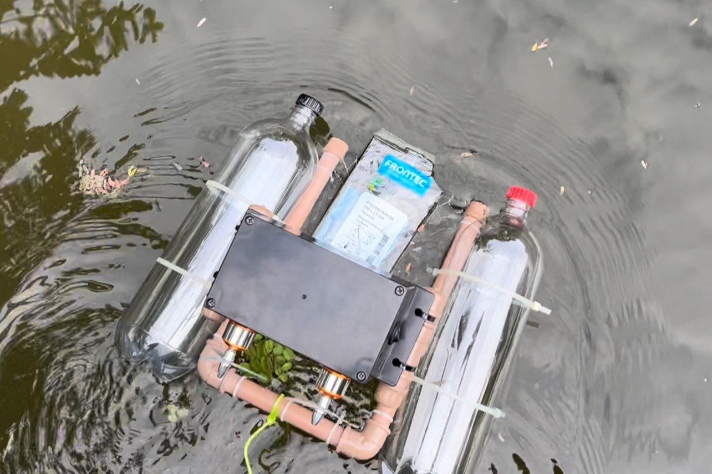
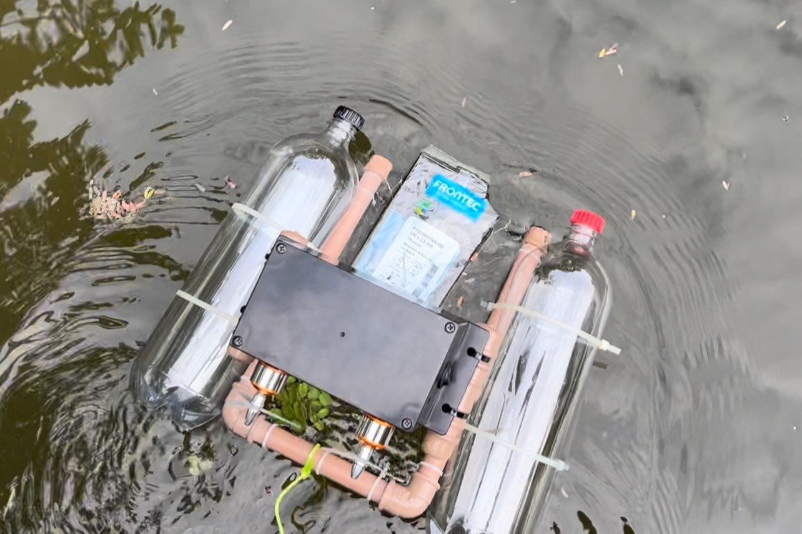
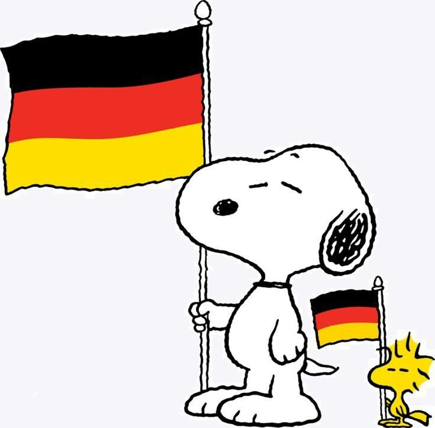

O robô foi projetado para coletar lixo de forma eficiente em rios e córregos, operando em velocidade moderada para proteger o ambiente. Ele precisa ser ágil para manobrar em áreas desafiadoras e tem um sistema de coleta robusto para diferentes resíduos, incluindo uma rede para capturar e armazenar o lixo até sua correta destinação.
 


Aprendi a falar alemão quando era pequena, mas perdi tudo porfalta de pratica. Então resolvi voltar a falar alemão, que pode me ajudar futuramente na chance de fazer um intercâmbio a alemanha.
